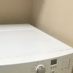

Electrolux Washer, Dryer, Refrigerator & Range Repair in Orange County
A front-load washer that won't drain, a dryer that runs but never heats, a refrigerator that quit making ice, an oven that throws an F10. We repair Electrolux washers, dryers, refrigerators, ranges and dishwashers across Orange County. Same-day service available.
What to expect
- Flat $99 diagnostic feeApplied toward the repair if you approve the work.
- Written quote firstItemized, before any work starts.
- 90-day parts, 30-day laborWarranty on every repair.
- Same-day serviceCall or book online.
Family-owned since 2017 · Licensed, bonded & insured
What Orange County Customers Say
From our 153 verified 5-star Google reviews
"AG fixed my Electrolux dryer and was very professional. He was efficient, genuine, and had great customer service. I highly recommend him and would definitely use his superb technical service again!"

"AG was the best repair person I have ever had at my house. Honest Nice knowledgable. Can't say enough about him. He works on all appliances I will be using him for everything going forward. He fixed both our washer and dryer."
"We have had AG our technician work for us in a couple of occasions. He is great and has done an amazing job with our fridge at least twice. He has saved from wasting money on new appliances.
Thanks AG"
Every Electrolux We Repair, and What Usually Goes Wrong
Electrolux sells front-load laundry, French door and side-by-side refrigerators, ranges, wall ovens, cooktops and dishwashers in the US. These are the faults our technicians see most often on Electrolux appliances in Orange County homes.
Electrolux Error Codes: F10, F90, E21 and More
The codes below come from Electrolux's own support and service documentation. Meanings vary by model and platform, and an older or different washer can show a different code for the same problem. Treat the code as a starting point, not a diagnosis.
Ranges and ovens
| Code | What Electrolux documents | Where we look first |
|---|---|---|
| F10 | Thermal runaway | The oven shut down because its temperature got out of control. Stop using it until it is checked. We test the temperature sensor and the control board. |
| F30 | Open temperature probe | The sensor circuit reads as broken. Usually the probe itself or its wiring. |
| F31 | Shorted temperature probe | The sensor circuit reads as shorted. Same suspects: the probe and its wiring. |
| F90 to F94 | Door lock fault | The lock motor, latch or switch is not reporting the right position. We check the lock assembly and its wiring. |
Front-load washers
| Code | What Electrolux documents | Where we look first |
|---|---|---|
| E11 | Fill time too long | The washer is not getting water fast enough. We check the supply valves, the hose screens and the inlet valve. |
| E13 | Water leak in the tub, or the pressure sensor | We look for a leak at the hoses and seals first, then test the pressure sensor. |
| E21 | Water not pumping out fast enough | A slow drain. The drain filter, the pump and the drain hose are the usual culprits. |
| E41 | Door or door-lock fault | The washer cannot confirm the door is closed and locked. We test the latch, the lock and the door switch. |
Seeing a code that is not listed here? Call (949) 629-5365 and read it to us along with the model number. We would rather tell you what it points to than have you guess.
Is Electrolux the Same as Frigidaire?
They're sister brands. Frigidaire and Electrolux both belong to the Electrolux Group, the Swedish appliance maker, and Electrolux even publishes a combined Electrolux and Frigidaire limited warranty document. Frigidaire is the group's larger brand in North America. Electrolux sells under its own name too.
Sharing a parent means some parts and some platforms overlap. It does not mean everything does. A part that fits a Frigidaire won't always fit your Electrolux, and the two brands don't always use the same error codes. That's why we ask for the full model number before we order anything.
If your appliance turns out to be a Frigidaire, our Frigidaire appliance repair page covers that brand in detail.
Electrolux Warranty: Call Electrolux First If You're Still Covered
Electrolux's standard limited warranty is one year from delivery on most categories, per Electrolux's US warranty page; limitations apply. Some products carry extra parts coverage after year one.
If your Electrolux is still inside one of these windows, contact Electrolux first. A covered repair costs you nothing, and it goes through them, because we are an independent repair company, separate from Electrolux. Once the window has closed, or the failure is something the warranty doesn't cover, that's when to call us.
From Call to Fixed: How an Electrolux Repair Works
Here is exactly what happens from your first call to a fully working Electrolux appliance.
Electrolux Repair Costs: What to Expect in Orange County
Most Electrolux faults cost a fraction of what a replacement would, so repair is usually the sensible call. These are typical Orange County ranges, not quotes.
Estimates vary by brand, part availability, and diagnosis. Final quote is provided before repair.
| Repair Type | Typical Range |
|---|---|
| Service call / diagnostic (generally credited toward repair if you proceed) | $75 – $100 |
| Refrigerator evaporator fan / air damper / control board | $180 – $380 |
| Gas range oven igniter / sensor | $180 – $340 |
| Dishwasher drain pump / clogged sump | $180 – $340 |
| Front-load washer door boot replacement | $200 – $380 |
| Dryer heating element / igniter / thermal fuse | $180 – $320 |
| Refrigerator sealed system (compressor / leak) | $400 – $800 |
Our company diagnostic fee is a flat $99 in Orange County, credited toward the repair if you proceed. See our full appliance repair cost guide for broader Orange County pricing context.
Electrolux repair across Orange County
Universal Appliances Repair Group Inc. repairs Electrolux front-load washers, dryers, refrigerators, ranges, wall ovens, cooktops and dishwashers across Orange County, California. Our technicians test the failed part and give you a written quote before any work begins.
We serve Westminster, Irvine, Anaheim, Santa Ana, Huntington Beach, Costa Mesa and surrounding cities, with same-day service available. Call (949) 629-5365 or book online to schedule an Electrolux repair visit.
What Orange County Electrolux Owners Ask Us
The most common questions from Electrolux owners across Westminster, Irvine, Anaheim, Santa Ana, Huntington Beach, and surrounding Orange County cities.
One Electrolux Home, Every Appliance Covered
Electrolux laundry, kitchen and refrigeration often live under one roof. One call handles the whole lineup.
Need Electrolux Repair in Orange County?
Same-day service available, and every repair carries a 90-day parts, 30-day labor warranty. Call now or book online.